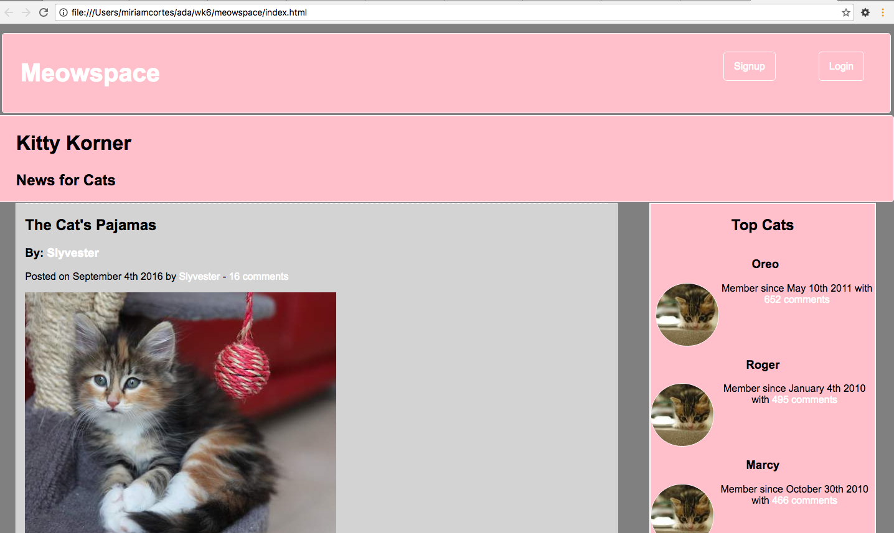

Let's start with the bad. We started learning html and css this week. The cool thing about html is that it will automatically do whatever you tell it to do. The not so cool thing is that it's almost like css sees how helpful html is and makes it its purpose in life to undo all that helpfulness.
Our first mini-assignment was to create a book review website for a few Ruby books. Since I was suffering with css so much I decided that I needed a small pick-me-up and made my site's author Miranda Sings. It's amazing how much more enjoyable something slightly torturous can be when done with someone who makes you laugh!
Of course it wouldn't be a Miranda book review site if she didn't plug her own book!
Once that assignment was complete we moved on to the week's assignment, creating "Meowspace." "What's that?" you ask, "like MySpace for cats?"

Yes. That's exactly what it is.
This week I learned that I have to push the perfectionist in me aside and just get projects done (much harder than it seems). Also learned to take advantage of that reset style sheet...it's seriously gold!
Check out the code for these projects here: Meowspace & First Page
{kind=link}
{kind=link}
{kind=link}
{kind=link}